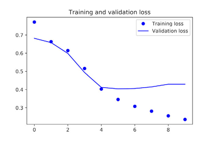

This chapter covers
This chapter explores deep-learning models that can process text (understood as sequences of words or sequences of characters), timeseries, and sequence data in general. The two fundamental deep-learning algorithms for sequence processing are recurrent neural networks and 1D convnets, the one-dimensional version of the 2D convnets that we covered in the previous chapters. We’ll discuss both of these approaches in this chapter.
Applications of these algorithms include the following:
This chapter’s examples focus on two narrow tasks: sentiment analysis on the IMDB dataset, a task we approached earlier in the book, and temperature forecasting. But the techniques demonstrated for these two tasks are relevant to all the applications just listed, and many more.
Text is one of the most widespread forms of sequence data. It can be understood as either a sequence of characters or a sequence of words, but it’s most common to work at the level of words. The deep-learning sequence-processing models introduced in the following sections can use text to produce a basic form of natural-l-anguage understanding, sufficient for applications including document classification, sentiment analysis, author identification, and even question-answering (QA) (in a constrained context). Of course, keep in mind throughout this chapter that none of these deep-learning models truly understand text in a human sense; rather, these models can map the statistical structure of written language, which is sufficient to solve many simple textual tasks. Deep learning for natural-language processing is pattern recognition applied to words, sentences, and paragraphs, in much the same way that computer vision is pattern recognition applied to pixels.
Like all other neural networks, deep-learning models don’t take as input raw text: they only work with numeric tensors. Vectorizing text is the process of transforming text into numeric tensors. This can be done in multiple ways:
Collectively, the different units into which you can break down text (words, characters, or n-grams) are called tokens, and breaking text into such tokens is called tokenization. All text-vectorization processes consist of applying some tokenization scheme and then associating numeric vectors with the generated tokens. These vectors, packed into sequence tensors, are fed into deep neural networks. There are multiple ways to associate a vector with a token. In this section, I’ll present two major ones: one-hot encoding of tokens, and token embedding (typically used exclusively for words, and called word embedding). The remainder of this section explains these techniques and shows how to use them to go from raw text to a Numpy tensor that you can send to a Keras network.
Figure 6.1. From text to tokens to vectors
Word n-grams are groups of N (or fewer) consecutive words that you can extract from a sentence. The same concept may also be applied to characters instead of words.
Here’s a simple example. Consider the sentence “The cat sat on the mat.” It may be decomposed into the following set of 2-grams:
{"The", "The cat", "cat", "cat sat", "sat",
"sat on", "on", "on the", "the", "the mat", "mat"}
It may also be decomposed into the following set of 3-grams:
{"The", "The cat", "cat", "cat sat", "The cat sat",
"sat", "sat on", "on", "cat sat on", "on the", "the",
"sat on the", "the mat", "mat", "on the mat"}
Such a set is called a bag-of-2-grams or bag-of-3-grams, respectively. The term bag here refers to the fact that you’re dealing with a set of tokens rather than a list or sequence: the tokens have no specific order. This family of tokenization methods is called bag-of-words.
Because bag-of-words isn’t an order-preserving tokenization method (the tokens generated are understood as a set, not a sequence, and the general structure of the sentences is lost), it tends to be used in shallow language-processing models rather than in deep-learning models. Extracting n-grams is a form of feature engineering, and deep learning does away with this kind of rigid, brittle approach, replacing it with hierarchical feature learning. One-dimensional convnets and recurrent neural networks, introduced later in this chapter, are capable of learning representations for groups of words and characters without being explicitly told about the existence of such groups, by looking at continuous word or character sequences. For this reason, we won’t cover n-grams any further in this book. But do keep in mind that they’re a powerful, unavoidable feature-engineering tool when using lightweight, shallow text-processing models such as logistic regression and random forests.
One-hot encoding is the most common, most basic way to turn a token into a vector. You saw it in action in the initial IMDB and Reuters examples in chapter 3 (done with words, in that case). It consists of associating a unique integer index with every word and then turning this integer index i into a binary vector of size N (the size of the vocabulary); the vector is all zeros except for the ith entry, which is 1.
Of course, one-hot encoding can be done at the character level, as well. To unambiguously drive home what one-hot encoding is and how to implement it, listings 6.1 and 6.2 show two toy examples: one for words, the other for characters.
Listing 6.1. Word-level one-hot encoding (toy example)
import numpy as np samples = ['The cat sat on the mat.', 'The dog ate my homework.'] ❶ token_index = {} ❷ for sample in samples: for word in sample.split(): ❸ if word not in token_index: token_index[word] = len(token_index) + 1 ❹ max_length = 10 ❺ results = np.zeros(shape=(len(samples), max_length, max(token_index.values()) + 1)) ❻ for i, sample in enumerate(samples): for j, word in list(enumerate(sample.split()))[:max_length]: index = token_index.get(word) results[i, j, index] = 1.
❶ Initial data: one entry per sample (in this example, a sample is a sentence, but it could be an entire document)
❷ Builds an index of all tokens in the data
❸ Tokenizes the samples via the split method. In real life, you’d also strip punctuation and special characters from the samples.
❹ Assigns a unique index to each unique word. Note that you don’t attribute index 0 to anything.
❺ Vectorizes the samples. You’ll only consider the first max_length words in each sample.
❻ This is where you store the results.
Listing 6.2. Character-level one-hot encoding (toy example)
import string
samples = ['The cat sat on the mat.', 'The dog ate my homework.']
characters = string.printable ❶
token_index = dict(zip(range(1, len(characters) + 1), characters))
max_length = 50
results = np.zeros((len(samples), max_length, max(token_index.keys()) + 1))
for i, sample in enumerate(samples):
for j, character in enumerate(sample):
index = token_index.get(character)
results[i, j, index] = 1.
❶ All printable ASCII characters
Note that Keras has built-in utilities for doing one-hot encoding of text at the word level or character level, starting from raw text data. You should use these utilities, because they take care of a number of important features such as stripping special characters from strings and only taking into account the N most common words in your dataset (a common restriction, to avoid dealing with very large input vector spaces).
Listing 6.3. Using Keras for word-level one-hot encoding
from keras.preprocessing.text import Tokenizer samples = ['The cat sat on the mat.', 'The dog ate my homework.'] tokenizer = Tokenizer(num_words=1000) ❶ tokenizer.fit_on_texts(samples) ❷ sequences = tokenizer.texts_to_sequences(samples) ❸ one_hot_results = tokenizer.texts_to_matrix(samples, mode='binary') ❹ word_index = tokenizer.word_index ❺ print('Found %s unique tokens.' % len(word_index))
❶ Creates a tokenizer, configured to only take into account the 1,000 most common words
❷ Builds the word index
❸ Builds the word index
❹ You could also directly get the one-hot binary representations. Vectorization modes other than one-hot encoding are supported by this tokenizer.
❺ How you can recover the word index that was computed
A variant of one-hot encoding is the so-called one-hot hashing trick, which you can use when the number of unique tokens in your vocabulary is too large to handle explicitly. Instead of explicitly assigning an index to each word and keeping a reference of these indices in a dictionary, you can hash words into vectors of fixed size. This is typically done with a very lightweight hashing function. The main advantage of this method is that it does away with maintaining an explicit word index, which saves memory and allows online encoding of the data (you can generate token vectors right away, before you’ve seen all of the available data). The one drawback of this approach is that it’s susceptible to hash collisions: two different words may end up with the same hash, and subsequently any machine-learning model looking at these hashes won’t be able to tell the difference between these words. The likelihood of hash collisions decreases when the dimensionality of the hashing space is much larger than the total number of unique tokens being hashed.
Listing 6.4. Word-level one-hot encoding with hashing trick (toy example)
samples = ['The cat sat on the mat.', 'The dog ate my homework.'] dimensionality = 1000 ❶ max_length = 10 results = np.zeros((len(samples), max_length, dimensionality)) for i, sample in enumerate(samples): for j, word in list(enumerate(sample.split()))[:max_length]: index = abs(hash(word)) % dimensionality ❷ results[i, j, index] = 1.
❶ Stores the words as vectors of size 1,000. If you have close to 1,000 words (or more), you’ll see many hash collisions, which will decrease the accuracy of this encoding method.
❷ Hashes the word into a random integer index between 0 and 1,000
Another popular and powerful way to associate a vector with a word is the use of dense word vectors, also called word embeddings. Whereas the vectors obtained through one-hot encoding are binary, sparse (mostly made of zeros), and very high-dimensional (same dimensionality as the number of words in the vocabulary), word embeddings are low-dimensional floating-point vectors (that is, dense vectors, as opposed to sparse vectors); see figure 6.2. Unlike the word vectors obtained via one-hot encoding, word embeddings are learned from data. It’s common to see word embeddings that are 256-dimensional, 512-dimensional, or 1,024-dimensional when dealing with very large vocabularies. On the other hand, one-hot encoding words generally leads to vectors that are 20,000-dimensional or greater (capturing a vocabulary of 20,000 tokens, in this case). So, word embeddings pack more information into far fewer dimensions.
Figure 6.2. Whereas word representations obtained from one-hot encoding or hashing are sparse, high-dimensional, and hardcoded, word embeddings are dense, relatively lowdimensional, and learned from data.
There are two ways to obtain word embeddings:
Let’s look at both.
Learning word embeddings with the Embedding layer
The simplest way to associate a dense vector with a word is to choose the vector at random. The problem with this approach is that the resulting embedding space has no structure: for instance, the words accurate and exact may end up with completely different embeddings, even though they’re interchangeable in most sentences. It’s difficult for a deep neural network to make sense of such a noisy, unstructured embedding space.
To get a bit more abstract, the geometric relationships between word vectors should reflect the semantic relationships between these words. Word embeddings are meant to map human language into a geometric space. For instance, in a reasonable embedding space, you would expect synonyms to be embedded into similar word vectors; and in general, you would expect the geometric distance (such as L2 distance) between any two word vectors to relate to the semantic distance between the associated words (words meaning different things are embedded at points far away from each other, whereas related words are closer). In addition to distance, you may want specific directions in the embedding space to be meaningful. To make this clearer, let’s look at a concrete example.
In figure 6.3, four words are embedded on a 2D plane: cat, dog, wolf, and tiger. With the vector representations we chose here, some semantic relationships between these words can be encoded as geometric transformations. For instance, the same vector allows us to go from cat to tiger and from dog to wolf: this vector could be interpreted as the “from pet to wild animal” vector. Similarly, another vector lets us go from dog to cat and from wolf to tiger, which could be interpreted as a “from canine to feline” vector.
Figure 6.3. A toy example of a word-embedding space
In real-world word-embedding spaces, common examples of meaningful geometric transformations are “gender” vectors and “plural” vectors. For instance, by adding a “female” vector to the vector “king,” we obtain the vector “queen.” By adding a “plural” vector, we obtain “kings.” Word-embedding spaces typically feature thousands of such interpretable and potentially useful vectors.
Is there some ideal word-embedding space that would perfectly map human language and could be used for any natural-language-processing task? Possibly, but we have yet to compute anything of the sort. Also, there is no such a thing as human language—there are many different languages, and they aren’t isomorphic, because a language is the reflection of a specific culture and a specific context. But more pragmatically, what makes a good word-embedding space depends heavily on your task: the perfect word-embedding space for an English-language movie-review sentiment-analysis model may look different from the perfect embedding space for an English-language legal--document-classification model, because the importance of certain semantic relationships varies from task to task.
It’s thus reasonable to learn a new embedding space with every new task. Fortunately, backpropagation makes this easy, and Keras makes it even easier. It’s about learning the weights of a layer: the Embedding layer.
Listing 6.5. Instantiating an Embedding layer
from keras.layers import Embedding
embedding_layer = Embedding(1000, 64) ❶
❶ The Embedding layer takes at least two arguments: the number of possible tokens (here, 1,000: 1 + maximum word index) and the dimensionality of the embeddings (here, 64).
The Embedding layer is best understood as a dictionary that maps integer indices (which stand for specific words) to dense vectors. It takes integers as input, it looks up these integers in an internal dictionary, and it returns the associated vectors. It’s effectively a dictionary lookup (see figure 6.4).
Figure 6.4. The embedding layer
The Embedding layer takes as input a 2D tensor of integers, of shape (samples, sequence_length), where each entry is a sequence of integers. It can embed sequences of variable lengths: for instance, you could feed into the Embedding layer in the previous example batches with shapes (32, 10) (batch of 32 sequences of length 10) or (64, 15) (batch of 64 sequences of length 15). All sequences in a batch must have the same length, though (because you need to pack them into a single tensor), so sequences that are shorter than others should be padded with zeros, and sequences that are longer should be truncated.
This layer returns a 3D floating-point tensor of shape (samples, sequence_length, embedding_dimensionality). Such a 3D tensor can then be processed by an RNN layer or a 1D convolution layer (both will be introduced in the following sections).
When you instantiate an Embedding layer, its weights (its internal dictionary of token vectors) are initially random, just as with any other layer. During training, these word vectors are gradually adjusted via backpropagation, structuring the space into something the downstream model can exploit. Once fully trained, the embedding space will show a lot of structure—a kind of structure specialized for the specific problem for which you’re training your model.
Let’s apply this idea to the IMDB movie-review sentiment-prediction task that you’re already familiar with. First, you’ll quickly prepare the data. You’ll restrict the movie reviews to the top 10,000 most common words (as you did the first time you worked with this dataset) and cut off the reviews after only 20 words. The network will learn 8-dimensional embeddings for each of the 10,000 words, turn the input integer sequences (2D integer tensor) into embedded sequences (3D float tensor), flatten the tensor to 2D, and train a single Dense layer on top for classification.
Listing 6.6. Loading the IMDB data for use with an Embedding layer
from keras.datasets import imdb from keras import preprocessing max_features = 10000 ❶ maxlen = 20 ❷ (x_train, y_train), (x_test, y_test) = imdb.load_data( num_words=max_features) ❸ x_train = preprocessing.sequence.pad_sequences(x_train, maxlen=maxlen ❹ x_test = preprocessing.sequence.pad_sequences(x_test, maxlen=maxlen)
❶ Number of words to consider as features
❷ Cuts off the text after this number of words (among the max_features most common words)
❸ Loads the data as lists of integers
❹ Turns the lists of integers into a 2D integer tensor of shape (samples, maxlen)
Listing 6.7. Using an Embedding layer and classifier on the IMDB data
from keras.models import Sequential from keras.layers import Flatten, Dense, Embedding model = Sequential() model.add(Embedding(10000, 8, input_length=maxlen)) ❶ model.add(Flatten()) ❷ model.add(Dense(1, activation='sigmoid')) ❸ model.compile(optimizer='rmsprop', loss='binary_crossentropy', metrics=['acc']) model.summary() history = model.fit(x_train, y_train, epochs=10, batch_size=32, validation_split=0.2)
❶ Specifies the maximum input length to the Embedding layer so you can later flatten the embedded inputs. After the Embedding layer, the activations have shape (samples, maxlen, 8).
❷ Flattens the 3D tensor of embeddings into a 2D tensor of shape (samples, maxlen * 8)
❸ Adds the classifier on top
You get to a validation accuracy of ~76%, which is pretty good considering that you’re only looking at the first 20 words in every review. But note that merely flattening the embedded sequences and training a single Dense layer on top leads to a model that treats each word in the input sequence separately, without considering inter-word relationships and sentence structure (for example, this model would likely treat both “this movie is a bomb” and “this movie is the bomb” as being negative reviews). It’s much better to add recurrent layers or 1D convolutional layers on top of the embedded sequences to learn features that take into account each sequence as a whole. That’s what we’ll focus on in the next few sections.
Using pretrained word embeddings
Sometimes, you have so little training data available that you can’t use your data alone to learn an appropriate task-specific embedding of your vocabulary. What do you do then?
Instead of learning word embeddings jointly with the problem you want to solve, you can load embedding vectors from a precomputed embedding space that you know is highly structured and exhibits useful properties—that captures generic aspects of language structure. The rationale behind using pretrained word embeddings in natural-language processing is much the same as for using pretrained convnets in image classification: you don’t have enough data available to learn truly powerful features on your own, but you expect the features that you need to be fairly generic—that is, common visual features or semantic features. In this case, it makes sense to reuse features learned on a different problem.
Such word embeddings are generally computed using word-occurrence statistics (observations about what words co-occur in sentences or documents), using a variety of techniques, some involving neural networks, others not. The idea of a dense, low-dimensional embedding space for words, computed in an unsupervised way, was initially explored by Bengio et al. in the early 2000s,[1] but it only started to take off in research and industry applications after the release of one of the most famous and successful word-embedding schemes: the Word2vec algorithm (https://code.google.com/archive/p/word2vec), developed by Tomas Mikolov at Google in 2013. Word2vec dimensions capture specific semantic properties, such as gender.
Yoshua Bengio et al., Neural Probabilistic Language Models (Springer, 2003).
There are various precomputed databases of word embeddings that you can download and use in a Keras Embedding layer. Word2vec is one of them. Another popular one is called Global Vectors for Word Representation (GloVe, https://nlp.stanford.edu/projects/glove), which was developed by Stanford researchers in 2014. This embedding technique is based on factorizing a matrix of word co-occurrence statistics. Its developers have made available precomputed embeddings for millions of English tokens, obtained from Wikipedia data and Common Crawl data.
Let’s look at how you can get started using GloVe embeddings in a Keras model. The same method is valid for Word2vec embeddings or any other word-embedding database. You’ll also use this example to refresh the text-tokenization techniques introduced a few paragraphs ago: you’ll start from raw text and work your way up.
You’ll use a model similar to the one we just went over: embedding sentences in sequences of vectors, flattening them, and training a Dense layer on top. But you’ll do so using pretrained word embeddings; and instead of using the pretokenized IMDB data packaged in Keras, you’ll start from scratch by downloading the original text data.
Downloading the IMDB data as raw text
First, head to http://mng.bz/0tIo and download the raw IMDB dataset. Uncompress it.
Now, let’s collect the individual training reviews into a list of strings, one string per review. You’ll also collect the review labels (positive/negative) into a labels list.
Listing 6.8. Processing the labels of the raw IMDB data
import os
imdb_dir = '/Users/fchollet/Downloads/aclImdb'
train_dir = os.path.join(imdb_dir, 'train')
labels = []
texts = []
for label_type in ['neg', 'pos']:
dir_name = os.path.join(train_dir, label_type)
for fname in os.listdir(dir_name):
if fname[-4:] == '.txt':
f = open(os.path.join(dir_name, fname))
texts.append(f.read())
f.close()
if label_type == 'neg':
labels.append(0)
else:
labels.append(1)
Let’s vectorize the text and prepare a training and validation split, using the concepts introduced earlier in this section. Because pretrained word embeddings are meant to be particularly useful on problems where little training data is available (otherwise, task-specific embeddings are likely to outperform them), we’ll add the following twist: restricting the training data to the first 200 samples. So you’ll learn to classify movie reviews after looking at just 200 examples.
Listing 6.9. Tokenizing the text of the raw IMDB data
from keras.preprocessing.text import Tokenizer from keras.preprocessing.sequence import pad_sequences import numpy as np maxlen = 100 ❶ training_samples = 200 ❷ validation_samples = 10000 ❸ max_words = 10000 ❹ tokenizer = Tokenizer(num_words=max_words) tokenizer.fit_on_texts(texts) sequences = tokenizer.texts_to_sequences(texts) word_index = tokenizer.word_index print('Found %s unique tokens.' % len(word_index)) data = pad_sequences(sequences, maxlen=maxlen) labels = np.asarray(labels) print('Shape of data tensor:', data.shape) print('Shape of label tensor:', labels.shape) indices = np.arange(data.shape[0]) ❺ np.random.shuffle(indices) data = data[indices] labels = labels[indices] x_train = data[:training_samples] y_train = labels[:training_samples] x_val = data[training_samples: training_samples + validation_samples] y_val = labels[training_samples: training_samples + validation_samples]
❶ Cuts off reviews after 100 words
❷ Trains on 200 samples
❸ Validates on 10,000 samples
❹ Considers only the top 10,000 words in the dataset
❺ Splits the data into a training set and a validation set, but first shuffles the data, because you’re starting with data in which samples are ordered (all negative first, then all positive)
Downloading the GloVe word embeddings
Go to https://nlp.stanford.edu/projects/glove, and download the precomputed embeddings from 2014 English Wikipedia. It’s an 822 MB zip file called glove.6B.zip, containing 100-dimensional embedding vectors for 400,000 words (or nonword tokens). Unzip it.
Let’s parse the unzipped file (a .txt file) to build an index that maps words (as strings) to their vector representation (as number vectors).
Listing 6.10. Parsing the GloVe word-embeddings file
glove_dir = '/Users/fchollet/Downloads/glove.6B'
embeddings_index = {}
f = open(os.path.join(glove_dir, 'glove.6B.100d.txt'))
for line in f:
values = line.split()
word = values[0]
coefs = np.asarray(values[1:], dtype='float32')
embeddings_index[word] = coefs
f.close()
print('Found %s word vectors.' % len(embeddings_index))
Next, you’ll build an embedding matrix that you can load into an Embedding layer. It must be a matrix of shape (max_words, embedding_dim), where each entry i contains the embedding_dim-dimensional vector for the word of index i in the reference word index (built during tokenization). Note that index 0 isn’t supposed to stand for any word or token—it’s a placeholder.
Listing 6.11. Preparing the GloVe word-embeddings matrix
embedding_dim = 100
embedding_matrix = np.zeros((max_words, embedding_dim))
for word, i in word_index.items():
if i < max_words:
embedding_vector = embeddings_index.get(word)
if embedding_vector is not None:
embedding_matrix[i] = embedding_vector ❶
❶ Words not found in the embedding index will be all zeros.
You’ll use the same model architecture as before.
Listing 6.12. Model definition
from keras.models import Sequential from keras.layers import Embedding, Flatten, Dense model = Sequential() model.add(Embedding(max_words, embedding_dim, input_length=maxlen)) model.add(Flatten()) model.add(Dense(32, activation='relu')) model.add(Dense(1, activation='sigmoid')) model.summary()
Loading the GloVe embeddings in the model
The Embedding layer has a single weight matrix: a 2D float matrix where each entry i is the word vector meant to be associated with index i. Simple enough. Load the GloVe matrix you prepared into the Embedding layer, the first layer in the model.
Listing 6.13. Loading pretrained word embeddings into the Embedding layer
model.layers[0].set_weights([embedding_matrix]) model.layers[0].trainable = False
Additionally, you’ll freeze the Embedding layer (set its trainable attribute to False), following the same rationale you’re already familiar with in the context of pretrained convnet features: when parts of a model are pretrained (like your Embedding layer) and parts are randomly initialized (like your classifier), the pretrained parts shouldn’t be updated during training, to avoid forgetting what they already know. The large gradient updates triggered by the randomly initialized layers would be disruptive to the already-learned features.
Training and evaluating the model
Compile and train the model.
Listing 6.14. Training and evaluation
model.compile(optimizer='rmsprop',
loss='binary_crossentropy',
metrics=['acc'])
history = model.fit(x_train, y_train,
epochs=10,
batch_size=32,
validation_data=(x_val, y_val))
model.save_weights('pre_trained_glove_model.h5')
Now, plot the model’s performance over time (see figures 6.5 and 6.6).
Figure 6.5. Training and validation loss when using pretrained word embeddings
Figure 6.6. Training and validation accuracy when using pretrained word embeddings
Listing 6.15. Plotting the results
import matplotlib.pyplot as plt
acc = history.history['acc']
val_acc = history.history['val_acc']
loss = history.history['loss']
val_loss = history.history['val_loss']
epochs = range(1, len(acc) + 1)
plt.plot(epochs, acc, 'bo', label='Training acc')
plt.plot(epochs, val_acc, 'b', label='Validation acc')
plt.title('Training and validation accuracy')
plt.legend()
plt.figure()
plt.plot(epochs, loss, 'bo', label='Training loss')
plt.plot(epochs, val_loss, 'b', label='Validation loss')
plt.title('Training and validation loss')
plt.legend()
plt.show()
The model quickly starts overfitting, which is unsurprising given the small number of training samples. Validation accuracy has high variance for the same reason, but it seems to reach the high 50s.
Note that your mileage may vary: because you have so few training samples, performance is heavily dependent on exactly which 200 samples you choose—and you’re choosing them at random. If this works poorly for you, try choosing a different random set of 200 samples, for the sake of the exercise (in real life, you don’t get to choose your training data).
You can also train the same model without loading the pretrained word embeddings and without freezing the embedding layer. In that case, you’ll learn a task--specific embedding of the input tokens, which is generally more powerful than pretrained word embeddings when lots of data is available. But in this case, you have only 200 training samples. Let’s try it (see figures 6.7 and 6.8).
Figure 6.7. Training and validation loss without using pretrained word embeddings
Figure 6.8. Training and validation accuracy without using pretrained word embeddings
Listing 6.16. Training the same model without pretrained word embeddings
from keras.models import Sequential
from keras.layers import Embedding, Flatten, Dense
model = Sequential()
model.add(Embedding(max_words, embedding_dim, input_length=maxlen))
model.add(Flatten())
model.add(Dense(32, activation='relu'))
model.add(Dense(1, activation='sigmoid'))
model.summary()
model.compile(optimizer='rmsprop',
loss='binary_crossentropy',
metrics=['acc'])
history = model.fit(x_train, y_train,
epochs=10,
batch_size=32,
validation_data=(x_val, y_val))
Validation accuracy stalls in the low 50s. So in this case, pretrained word embeddings outperform jointly learned embeddings. If you increase the number of training samples, this will quickly stop being the case—try it as an exercise.
Finally, let’s evaluate the model on the test data. First, you need to tokenize the test data.
Listing 6.17. Tokenizing the data of the test set
test_dir = os.path.join(imdb_dir, 'test')
labels = []
texts = []
for label_type in ['neg', 'pos']:
dir_name = os.path.join(test_dir, label_type)
for fname in sorted(os.listdir(dir_name)):
if fname[-4:] == '.txt':
f = open(os.path.join(dir_name, fname))
texts.append(f.read())
f.close()
if label_type == 'neg':
labels.append(0)
else:
labels.append(1)
sequences = tokenizer.texts_to_sequences(texts)
x_test = pad_sequences(sequences, maxlen=maxlen)
y_test = np.asarray(labels)
Next, load and evaluate the first model.
Listing 6.18. Evaluating the model on the test set
model.load_weights('pre_trained_glove_model.h5')
model.evaluate(x_test, y_test)
You get an appalling test accuracy of 56%. Working with just a handful of training samples is difficult!
Now you’re able to do the following:
A major characteristic of all neural networks you’ve seen so far, such as densely connected networks and convnets, is that they have no memory. Each input shown to them is processed independently, with no state kept in between inputs. With such networks, in order to process a sequence or a temporal series of data points, you have to show the entire sequence to the network at once: turn it into a single data point. For instance, this is what you did in the IMDB example: an entire movie review was transformed into a single large vector and processed in one go. Such networks are called feedforward networks.
In contrast, as you’re reading the present sentence, you’re processing it word by word—or rather, eye saccade by eye saccade—while keeping memories of what came before; this gives you a fluid representation of the meaning conveyed by this sentence. Biological intelligence processes information incrementally while maintaining an internal model of what it’s processing, built from past information and constantly updated as new information comes in.
A recurrent neural network (RNN) adopts the same principle, albeit in an extremely simplified version: it processes sequences by iterating through the sequence elements and maintaining a state containing information relative to what it has seen so far. In effect, an RNN is a type of neural network that has an internal loop (see figure 6.9). The state of the RNN is reset between processing two different, independent sequences (such as two different IMDB reviews), so you still consider one sequence a single data point: a single input to the network. What changes is that this data point is no longer processed in a single step; rather, the network internally loops over sequence elements.
Figure 6.9. A recurrent network: a network with a loop
To make these notions of loop and state clear, let’s implement the forward pass of a toy RNN in Numpy. This RNN takes as input a sequence of vectors, which you’ll encode as a 2D tensor of size (timesteps, input_features). It loops over timesteps, and at each timestep, it considers its current state at t and the input at t (of shape (input_features,), and combines them to obtain the output at t. You’ll then set the state for the next step to be this previous output. For the first timestep, the previous output isn’t defined; hence, there is no current state. So, you’ll initialize the state as an all-zero vector called the initial state of the network.
In pseudocode, this is the RNN.
state_t = 0 ❶ for input_t in input_sequence: ❷ output_t = f(input_t, state_t) state_t = output_t ❸
❷ Iterates over sequence elements
❸ The previous output becomes the state for the next iteration.
You can even flesh out the function f: the transformation of the input and state into an output will be parameterized by two matrices, W and U, and a bias vector. It’s similar to the transformation operated by a densely connected layer in a feedforward network.
Listing 6.20. More detailed pseudocode for the RNN
state_t = 0
for input_t in input_sequence:
output_t = activation(dot(W, input_t) + dot(U, state_t) + b)
state_t = output_t
To make these notions absolutely unambiguous, let’s write a naive Numpy implementation of the forward pass of the simple RNN.
Listing 6.21. Numpy implementation of a simple RNN
import numpy as np timesteps = 100 ❶ input_features = 32 ❷ output_features = 64 ❸ inputs = np.random.random((timesteps, input_features)) ❹ state_t = np.zeros((output_features,)) ❺ W = np.random.random((output_features, input_features)) ❻ U = np.random.random((output_features, output_features)) ❻ b = np.random.random((output_features,)) ❻ successive_outputs = [] for input_t in inputs: ❼ output_t = np.tanh(np.dot(W, input_t) + np.dot(U, state_t) + b) ❽ successive_outputs.append(output_t) ❾ state_t = output_t ❿ final_output_sequence = np.concatenate(successive_outputs, axis=0) ⓫
❶ Number of timesteps in the input sequence
❷ Dimensionality of the input feature space
❸ Dimensionality of the output feature space
❹ Input data: random noise for the sake of the example
❺ Initial state: an all-zero vector
❻ Creates random weight matrices
❼ input_t is a vector of shape (input_features,).
❽ Combines the input with the current state (the previous output) to obtain the current output
❾ Stores this output in a list
❿ Updates the state of the network for the next timestep
⓫ The final output is a 2D tensor of shape (timesteps, output_features).
Easy enough: in summary, an RNN is a for loop that reuses quantities computed during the previous iteration of the loop, nothing more. Of course, there are many different RNNs fitting this definition that you could build—this example is one of the simplest RNN formulations. RNNs are characterized by their step function, such as the following function in this case (see figure 6.10):
output_t = np.tanh(np.dot(W, input_t) + np.dot(U, state_t) + b)
Figure 6.10. A simple RNN, unrolled over time
Note
In this example, the final output is a 2D tensor of shape (timesteps, output_features), where each timestep is the output of the loop at time t. Each timestep t in the output tensor contains information about timesteps 0 to t in the input sequence—about the entire past. For this reason, in many cases, you don’t need this full sequence of outputs; you just need the last output (output_t at the end of the loop), because it already contains information about the entire sequence.
The process you just naively implemented in Numpy corresponds to an actual Keras layer—the SimpleRNN layer:
from keras.layers import SimpleRNN
There is one minor difference: SimpleRNN processes batches of sequences, like all other Keras layers, not a single sequence as in the Numpy example. This means it takes inputs of shape (batch_size, timesteps, input_features), rather than (timesteps, input_features).
Like all recurrent layers in Keras, SimpleRNN can be run in two different modes: it can return either the full sequences of successive outputs for each timestep (a 3D tensor of shape (batch_size, timesteps, output_features)) or only the last output for each input sequence (a 2D tensor of shape (batch_size, output_features)). These two modes are controlled by the return_sequences constructor argument. Let’s look at an example that uses SimpleRNN and returns only the output at the last timestep:
>>> from keras.models import Sequential >>> from keras.layers import Embedding, SimpleRNN >>> model = Sequential() >>> model.add(Embedding(10000, 32)) >>> model.add(SimpleRNN(32)) >>> model.summary() ________________________________________________________________ Layer (type) Output Shape Param # ================================================================ embedding_22 (Embedding) (None, None, 32) 320000 ________________________________________________________________ simplernn_10 (SimpleRNN) (None, 32) 2080 ================================================================ Total params: 322,080 Trainable params: 322,080 Non-trainable params: 0
The following example returns the full state sequence:
>>> model = Sequential() >>> model.add(Embedding(10000, 32)) >>> model.add(SimpleRNN(32, return_sequences=True)) >>> model.summary() ________________________________________________________________ Layer (type) Output Shape Param # ================================================================ embedding_23 (Embedding) (None, None, 32) 320000 ________________________________________________________________ simplernn_11 (SimpleRNN) (None, None, 32) 2080 ================================================================ Total params: 322,080 Trainable params: 322,080 Non-trainable params: 0
It’s sometimes useful to stack several recurrent layers one after the other in order to increase the representational power of a network. In such a setup, you have to get all of the intermediate layers to return full sequence of outputs:
>>> model = Sequential()
>>> model.add(Embedding(10000, 32))
>>> model.add(SimpleRNN(32, return_sequences=True))
>>> model.add(SimpleRNN(32, return_sequences=True))
>>> model.add(SimpleRNN(32, return_sequences=True))
>>> model.add(SimpleRNN(32)) ❶
>>> model.summary()
________________________________________________________________
Layer (type) Output Shape Param #
================================================================
embedding_24 (Embedding) (None, None, 32) 320000
________________________________________________________________
simplernn_12 (SimpleRNN) (None, None, 32) 2080
________________________________________________________________
simplernn_13 (SimpleRNN) (None, None, 32) 2080
________________________________________________________________
simplernn_14 (SimpleRNN) (None, None, 32) 2080
________________________________________________________________
simplernn_15 (SimpleRNN) (None, 32) 2080
================================================================
Total params: 328,320
Trainable params: 328,320
Non-trainable params: 0
❶ Last layer only returns the last output
Now, let’s use such a model on the IMDB movie-review-classification problem. First, preprocess the data.
Listing 6.22. Preparing the IMDB data
from keras.datasets import imdb from keras.preprocessing import sequence max_features = 10000 ❶ maxlen = 500 ❷ batch_size = 32 print('Loading data...') (input_train, y_train), (input_test, y_test) = imdb.load_data( num_words=max_features) print(len(input_train), 'train sequences') print(len(input_test), 'test sequences') print('Pad sequences (samples x time)') input_train = sequence.pad_sequences(input_train, maxlen=maxlen) input_test = sequence.pad_sequences(input_test, maxlen=maxlen) print('input_train shape:', input_train.shape) print('input_test shape:', input_test.shape)
❶ Number of words to consider as features
❷ Cuts off texts after this many words (among the max_features most common words)
Let’s train a simple recurrent network using an Embedding layer and a SimpleRNN layer.
Listing 6.23. Training the model with Embedding and SimpleRNN layers
from keras.layers import Dense
model = Sequential()
model.add(Embedding(max_features, 32))
model.add(SimpleRNN(32))
model.add(Dense(1, activation='sigmoid'))
model.compile(optimizer='rmsprop', loss='binary_crossentropy', metrics=['acc'])
history = model.fit(input_train, y_train,
epochs=10,
batch_size=128,
validation_split=0.2)
Now, let’s display the training and validation loss and accuracy (see figures 6.11 and 6.12).
Figure 6.11. Training and validation loss on IMDB with simplernn
Figure 6.12. Training and validation accuracy on IMDB with simplernn
Listing 6.24. Plotting results
import matplotlib.pyplot as plt
acc = history.history['acc']
val_acc = history.history['val_acc']
loss = history.history['loss']
val_loss = history.history['val_loss']
epochs = range(1, len(acc) + 1)
plt.plot(epochs, acc, 'bo', label='Training acc')
plt.plot(epochs, val_acc, 'b', label='Validation acc')
plt.title('Training and validation accuracy')
plt.legend()
plt.figure()
plt.plot(epochs, loss, 'bo', label='Training loss')
plt.plot(epochs, val_loss, 'b', label='Validation loss')
plt.title('Training and validation loss')
plt.legend()
plt.show()
As a reminder, in chapter 3, the first naive approach to this dataset got you to a test accuracy of 88%. Unfortunately, this small recurrent network doesn’t perform well compared to this baseline (only 85% validation accuracy). Part of the problem is that your inputs only consider the first 500 words, rather than full sequences—hence, the RNN has access to less information than the earlier baseline model. The remainder of the problem is that SimpleRNN isn’t good at processing long sequences, such as text. Other types of recurrent layers perform much better. Let’s look at some more-advanced layers.
SimpleRNN isn’t the only recurrent layer available in Keras. There are two others: LSTM and GRU. In practice, you’ll always use one of these, because SimpleRNN is generally too simplistic to be of real use. SimpleRNN has a major issue: although it should theoretically be able to retain at time t information about inputs seen many timesteps before, in practice, such long-term dependencies are impossible to learn. This is due to the vanishing gradient problem, an effect that is similar to what is observed with non-recurrent networks (feedforward networks) that are many layers deep: as you keep adding layers to a network, the network eventually becomes untrainable. The theoretical reasons for this effect were studied by Hochreiter, Schmidhuber, and Bengio in the early 1990s.[2] The LSTM and GRU layers are designed to solve this problem.
See, for example, Yoshua Bengio, Patrice Simard, and Paolo Frasconi, “Learning Long-Term Dependencies with Gradient Descent Is Difficult,” IEEE Transactions on Neural Networks 5, no. 2 (1994).
Let’s consider the LSTM layer. The underlying Long Short-Term Memory (LSTM) algorithm was developed by Hochreiter and Schmidhuber in 1997;[3] it was the culmination of their research on the vanishing gradient problem.
Sepp Hochreiter and Jürgen Schmidhuber, “Long Short-Term Memory,” Neural Computation 9, no. 8 (1997).
This layer is a variant of the SimpleRNN layer you already know about; it adds a way to carry information across many timesteps. Imagine a conveyor belt running parallel to the sequence you’re processing. Information from the sequence can jump onto the conveyor belt at any point, be transported to a later timestep, and jump off, intact, when you need it. This is essentially what LSTM does: it saves information for later, thus preventing older signals from gradually vanishing during processing.
To understand this in detail, let’s start from the SimpleRNN cell (see figure 6.13). Because you’ll have a lot of weight matrices, index the W and U matrices in the cell with the letter o (Wo and Uo) for output.
Figure 6.13. The starting point of an lstm layer: a simplernn
Let’s add to this picture an additional data flow that carries information across timesteps. Call its values at different timesteps Ct, where C stands for carry. This information will have the following impact on the cell: it will be combined with the input connection and the recurrent connection (via a dense transformation: a dot product with a weight matrix followed by a bias add and the application of an activation function), and it will affect the state being sent to the next timestep (via an activation function and a multiplication operation). Conceptually, the carry dataflow is a way to modulate the next output and the next state (see figure 6.14). Simple so far.
Figure 6.14. Going from a simplernn to an lstm: adding a carry track
Now the subtlety: the way the next value of the carry dataflow is computed. It involves three distinct transformations. All three have the form of a SimpleRNN cell:
y = activation(dot(state_t, U) + dot(input_t, W) + b)
But all three transformations have their own weight matrices, which you’ll index with the letters i, f, and k. Here’s what you have so far (it may seem a bit arbitrary, but bear with me).
Listing 6.25. Pseudocode details of the LSTM architecture (1/2)
output_t = activation(dot(state_t, Uo) + dot(input_t, Wo) + dot(C_t, Vo) + bo) i_t = activation(dot(state_t, Ui) + dot(input_t, Wi) + bi) f_t = activation(dot(state_t, Uf) + dot(input_t, Wf) + bf) k_t = activation(dot(state_t, Uk) + dot(input_t, Wk) + bk)
You obtain the new carry state (the next c_t) by combining i_t, f_t, and k_t.
Listing 6.26. Pseudocode details of the LSTM architecture (2/2)
c_t+1 = i_t * k_t + c_t * f_t
Add this as shown in figure 6.15. And that’s it. Not so complicated—merely a tad complex.
Figure 6.15. Anatomy of an lstm
If you want to get philosophical, you can interpret what each of these operations is meant to do. For instance, you can say that multiplying c_t and f_t is a way to deliberately forget irrelevant information in the carry dataflow. Meanwhile, i_t and k_t provide information about the present, updating the carry track with new information. But at the end of the day, these interpretations don’t mean much, because what these operations actually do is determined by the contents of the weights parameterizing them; and the weights are learned in an end-to-end fashion, starting over with each training round, making it impossible to credit this or that operation with a specific purpose. The specification of an RNN cell (as just described) determines your hypothesis space—the space in which you’ll search for a good model configuration during training—but it doesn’t determine what the cell does; that is up to the cell weights. The same cell with different weights can be doing very different things. So the combination of operations making up an RNN cell is better interpreted as a set of constraints on your search, not as a design in an engineering sense.
To a researcher, it seems that the choice of such constraints—the question of how to implement RNN cells—is better left to optimization algorithms (like genetic algorithms or reinforcement learning processes) than to human engineers. And in the future, that’s how we’ll build networks. In summary: you don’t need to understand anything about the specific architecture of an LSTM cell; as a human, it shouldn’t be your job to understand it. Just keep in mind what the LSTM cell is meant to do: allow past information to be reinjected at a later time, thus fighting the vanishing-gradient problem.
Now let’s switch to more practical concerns: you’ll set up a model using an LSTM layer and train it on the IMDB data (see figures 6.16 and 6.17). The network is similar to the one with SimpleRNN that was just presented. You only specify the output dimensionality of the LSTM layer; leave every other argument (there are many) at the Keras defaults. Keras has good defaults, and things will almost always “just work” without you having to spend time tuning parameters by hand.
Figure 6.16. Training and validation loss on IMDB with LSTM
Figure 6.17. Training and validation accuracy on IMDB with LSTM
Listing 6.27. Using the LSTM layer in Keras
from keras.layers import LSTM
model = Sequential()
model.add(Embedding(max_features, 32))
model.add(LSTM(32))
model.add(Dense(1, activation='sigmoid'))
model.compile(optimizer='rmsprop',
loss='binary_crossentropy',
metrics=['acc'])
history = model.fit(input_train, y_train,
epochs=10,
batch_size=128,
validation_split=0.2)
This time, you achieve up to 89% validation accuracy. Not bad: certainly much better than the SimpleRNN network—that’s largely because LSTM suffers much less from the vanishing-gradient problem—and slightly better than the fully connected approach from chapter 3, even though you’re looking at less data than you were in chapter 3. You’re truncating sequences after 500 timesteps, whereas in chapter 3, you were considering full sequences.
But this result isn’t groundbreaking for such a computationally intensive approach. Why isn’t LSTM performing better? One reason is that you made no effort to tune hyperparameters such as the embeddings dimensionality or the LSTM output dimensionality. Another may be lack of regularization. But honestly, the primary reason is that analyzing the global, long-term structure of the reviews (what LSTM is good at) isn’t helpful for a sentiment-analysis problem. Such a basic problem is well solved by looking at what words occur in each review, and at what frequency. That’s what the first fully connected approach looked at. But there are far more difficult natural--language-processing problems out there, where the strength of LSTM will become apparent: in particular, question-answering and machine translation.
Now you understand the following:
Next, we’ll review a number of more advanced features of RNNs, which can help you get the most out of your deep-learning sequence models.
In this section, we’ll review three advanced techniques for improving the performance and generalization power of recurrent neural networks. By the end of the section, you’ll know most of what there is to know about using recurrent networks with Keras. We’ll demonstrate all three concepts on a temperature-forecasting problem, where you have access to a timeseries of data points coming from sensors installed on the roof of a building, such as temperature, air pressure, and humidity, which you use to predict what the temperature will be 24 hours after the last data point. This is a fairly challenging problem that exemplifies many common difficulties encountered when working with timeseries.
We’ll cover the following techniques:
Until now, the only sequence data we’ve covered has been text data, such as the IMDB dataset and the Reuters dataset. But sequence data is found in many more problems than just language processing. In all the examples in this section, you’ll play with a weather timeseries dataset recorded at the Weather Station at the Max Planck Institute for Biogeochemistry in Jena, Germany.[4]
Olaf Kolle, www.bgc-jena.mpg.de/wetter.
In this dataset, 14 different quantities (such as air temperature, atmospheric pressure, humidity, wind direction, and so on) were recorded every 10 minutes, over several years. The original data goes back to 2003, but this example is limited to data from 2009–2016. This dataset is perfect for learning to work with numerical timeseries. You’ll use it to build a model that takes as input some data from the recent past (a few days’ worth of data points) and predicts the air temperature 24 hours in the future.
Download and uncompress the data as follows:
cd ~/Downloads mkdir jena_climate cd jena_climate wget https://s3.amazonaws.com/keras-datasets/jena_climate_2009_2016.csv.zip unzip jena_climate_2009_2016.csv.zip
Let’s look at the data.
Listing 6.28. Inspecting the data of the Jena weather dataset
import os
data_dir = '/users/fchollet/Downloads/jena_climate'
fname = os.path.join(data_dir, 'jena_climate_2009_2016.csv')
f = open(fname)
data = f.read()
f.close()
lines = data.split('\n')
header = lines[0].split(',')
lines = lines[1:]
print(header)
print(len(lines))
This outputs a count of 420,551 lines of data (each line is a timestep: a record of a date and 14 weather-related values), as well as the following header:
["Date Time", "p (mbar)", "T (degC)", "Tpot (K)", "Tdew (degC)", "rh (%)", "VPmax (mbar)", "VPact (mbar)", "VPdef (mbar)", "sh (g/kg)", "H2OC (mmol/mol)", "rho (g/m**3)", "wv (m/s)", "max. wv (m/s)", "wd (deg)"]
Now, convert all 420,551 lines of data into a Numpy array.
Listing 6.29. Parsing the data
import numpy as np
float_data = np.zeros((len(lines), len(header) - 1))
for i, line in enumerate(lines):
values = [float(x) for x in line.split(',')[1:]]
float_data[i, :] = values
For instance, here is the plot of temperature (in degrees Celsius) over time (see figure 6.18). On this plot, you can clearly see the yearly periodicity of temperature.
Figure 6.18. Temperature over the full temporal range of the dataset (°C)
Listing 6.30. Plotting the temperature timeseries
from matplotlib import pyplot as plt
temp = float_data[:, 1] ❶
plt.plot(range(len(temp)), temp)
❶ temperature (in degrees Celsius)
Here is a more narrow plot of the first 10 days of temperature data (see figure 6.19). Because the data is recorded every 10 minutes, you get 144 data points per day.
Figure 6.19. Temperature over the first 10 days of the dataset (°C)
Listing 6.31. Plotting the first 10 days of the temperature timeseries
plt.plot(range(1440), temp[:1440])
On this plot, you can see daily periodicity, especially evident for the last 4 days. Also note that this 10-day period must be coming from a fairly cold winter month.
If you were trying to predict average temperature for the next month given a few months of past data, the problem would be easy, due to the reliable year-scale periodicity of the data. But looking at the data over a scale of days, the temperature looks a lot more chaotic. Is this timeseries predictable at a daily scale? Let’s find out.
The exact formulation of the problem will be as follows: given data going as far back as lookback timesteps (a timestep is 10 minutes) and sampled every steps timesteps, can you predict the temperature in delay timesteps? You’ll use the following parameter values:
To get started, you need to do two things:
You’ll preprocess the data by subtracting the mean of each timeseries and dividing by the standard deviation. You’re going to use the first 200,000 timesteps as training data, so compute the mean and standard deviation only on this fraction of the data.
Listing 6.32. Normalizing the data
mean = float_data[:200000].mean(axis=0) float_data -= mean std = float_data[:200000].std(axis=0) float_data /= std
Listing 6.33 shows the data generator you’ll use. It yields a tuple (samples, targets), where samples is one batch of input data and targets is the corresponding array of target temperatures. It takes the following arguments:
Listing 6.33. Generator yielding timeseries samples and their targets
def generator(data, lookback, delay, min_index, max_index,
shuffle=False, batch_size=128, step=6):
if max_index is None:
max_index = len(data) - delay - 1
i = min_index + lookback
while 1:
if shuffle:
rows = np.random.randint(
min_index + lookback, max_index, size=batch_size)
else:
if i + batch_size >= max_index:
i = min_index + lookback
rows = np.arange(i, min(i + batch_size, max_index))
i += len(rows)
samples = np.zeros((len(rows),
lookback // step,
data.shape[-1]))
targets = np.zeros((len(rows),))
for j, row in enumerate(rows):
indices = range(rows[j] - lookback, rows[j], step)
samples[j] = data[indices]
targets[j] = data[rows[j] + delay][1]
yield samples, targets
Now, let’s use the abstract generator function to instantiate three generators: one for training, one for validation, and one for testing. Each will look at different temporal segments of the original data: the training generator looks at the first 200,000 timesteps, the validation generator looks at the following 100,000, and the test generator looks at the remainder.
Listing 6.34. Preparing the training, validation, and test generators
lookback = 1440
step = 6
delay = 144
batch_size = 128
train_gen = generator(float_data,
lookback=lookback,
delay=delay,
min_index=0,
max_index=200000,
shuffle=True,
step=step,
batch_size=batch_size)
val_gen = generator(float_data,
lookback=lookback,
delay=delay,
min_index=200001,
max_index=300000,
step=step,
batch_size=batch_size)
test_gen = generator(float_data,
lookback=lookback,
delay=delay,
min_index=300001,
max_index=None,
step=step,
batch_size=batch_size)
val_stseps = (300000 - 200001 - lookback) // batch_size ❶
tes_steps = (len(float_data) - 300001 - lookback) // batch_size ❷
❶ How many steps to draw from val_gen in order to see the entire validation set
❷ How many steps to draw from test_gen in order to see the entire test set
Before you start using black-box deep-learning models to solve the temperature--prediction problem, let’s try a simple, common-sense approach. It will serve as a sanity check, and it will establish a baseline that you’ll have to beat in order to demonstrate the usefulness of more-advanced machine-learning models. Such common-sense baselines can be useful when you’re approaching a new problem for which there is no known solution (yet). A classic example is that of unbalanced classification tasks, where some classes are much more common than others. If your dataset contains 90% instances of class A and 10% instances of class B, then a common-sense approach to the classification task is to always predict “A” when presented with a new sample. Such a classifier is 90% accurate overall, and any learning-based approach should therefore beat this 90% score in order to demonstrate usefulness. Sometimes, such elementary baselines can prove surprisingly hard to beat.
In this case, the temperature timeseries can safely be assumed to be continuous (the temperatures tomorrow are likely to be close to the temperatures today) as well as periodical with a daily period. Thus a common-sense approach is to always predict that the temperature 24 hours from now will be equal to the temperature right now. Let’s evaluate this approach, using the mean absolute error (MAE) metric:
np.mean(np.abs(preds - targets))
Here’s the evaluation loop.
Listing 6.35. Computing the common-sense baseline MAE
def evaluate_naive_method():
batch_maes = []
for step in range(val_steps):
samples, targets = next(val_gen)
preds = samples[:, -1, 1]
mae = np.mean(np.abs(preds - targets))
batch_maes.append(mae)
print(np.mean(batch_maes))
evaluate_naive_method()
This yields an MAE of 0.29. Because the temperature data has been normalized to be centered on 0 and have a standard deviation of 1, this number isn’t immediately interpretable. It translates to an average absolute error of 0.29 × temperature_std degrees Celsius: 2.57°C.
Listing 6.36. Converting the MAE back to a Celsius error
celsius_mae = 0.29 * std[1]
That’s a fairly large average absolute error. Now the game is to use your knowledge of deep learning to do better.
In the same way that it’s useful to establish a common-sense baseline before trying machine-learning approaches, it’s useful to try simple, cheap machine-learning models (such as small, densely connected networks) before looking into complicated and computationally expensive models such as RNNs. This is the best way to make sure any further complexity you throw at the problem is legitimate and delivers real benefits.
The following listing shows a fully connected model that starts by flattening the data and then runs it through two Dense layers. Note the lack of activation function on the last Dense layer, which is typical for a regression problem. You use MAE as the loss. Because you evaluate on the exact same data and with the exact same metric you did with the common-sense approach, the results will be directly comparable.
Listing 6.37. Training and evaluating a densely connected model
from keras.models import Sequential
from keras import layers
from keras.optimizers import RMSprop
model = Sequential()
model.add(layers.Flatten(input_shape=(lookback // step, float_data.shape[-1])))
model.add(layers.Dense(32, activation='relu'))
model.add(layers.Dense(1))
model.compile(optimizer=RMSprop(), loss='mae')
history = model.fit_generator(train_gen,
steps_per_epoch=500,
epochs=20,
validation_data=val_gen,
validation_steps=val_steps)
Let’s display the loss curves for validation and training (see figure 6.20).
Figure 6.20. Training and validation loss on the Jena temperature-forecasting task with a simple, densely connected network
Listing 6.38. Plotting results
import matplotlib.pyplot as plt
loss = history.history['loss']
val_loss = history.history['val_loss']
epochs = range(1, len(loss) + 1)
plt.figure()
plt.plot(epochs, loss, 'bo', label='Training loss')
plt.plot(epochs, val_loss, 'b', label='Validation loss')
plt.title('Training and validation loss')
plt.legend()
plt.show()
Some of the validation losses are close to the no-learning baseline, but not reliably. This goes to show the merit of having this baseline in the first place: it turns out to be not easy to outperform. Your common sense contains a lot of valuable information that a machine-learning model doesn’t have access to.
You may wonder, if a simple, well-performing model exists to go from the data to the targets (the common-sense baseline), why doesn’t the model you’re training find it and improve on it? Because this simple solution isn’t what your training setup is looking for. The space of models in which you’re searching for a solution—that is, your hypothesis space—is the space of all possible two-layer networks with the configuration you defined. These networks are already fairly complicated. When you’re looking for a solution with a space of complicated models, the simple, well-performing baseline may be unlearnable, even if it’s technically part of the hypothesis space. That is a pretty significant limitation of machine learning in general: unless the learning algorithm is hardcoded to look for a specific kind of simple model, parameter learning can sometimes fail to find a simple solution to a simple problem.
The first fully connected approach didn’t do well, but that doesn’t mean machine learning isn’t applicable to this problem. The previous approach first flattened the timeseries, which removed the notion of time from the input data. Let’s instead look at the data as what it is: a sequence, where causality and order matter. You’ll try a recurrent-sequence processing model—it should be the perfect fit for such sequence data, precisely because it exploits the temporal ordering of data points, unlike the first approach.
Instead of the LSTM layer introduced in the previous section, you’ll use the GRU layer, developed by Chung et al. in 2014.[5] Gated recurrent unit (GRU) layers work using the same principle as LSTM, but they’re somewhat streamlined and thus cheaper to run (although they may not have as much representational power as LSTM). This trade-off between computational expensiveness and representational power is seen everywhere in machine learning.
Junyoung Chung et al., “Empirical Evaluation of Gated Recurrent Neural Networks on Sequence Modeling,” Conference on Neural Information Processing Systems (2014), https://arxiv.org/abs/1412.3555.
Listing 6.39. Training and evaluating a GRU-based model
from keras.models import Sequential
from keras import layers
from keras.optimizers import RMSprop
model = Sequential()
model.add(layers.GRU(32, input_shape=(None, float_data.shape[-1])))
model.add(layers.Dense(1))
model.compile(optimizer=RMSprop(), loss='mae')
history = model.fit_generator(train_gen,
steps_per_epoch=500,
epochs=20,
validation_data=val_gen,
validation_steps=val_steps)
Figure 6.21 shows the results. Much better! You can significantly beat the common-sense baseline, demonstrating the value of machine learning as well as the superiority of recurrent networks compared to sequence-flattening dense networks on this type of task.
Figure 6.21. Training and validation loss on the Jena temperature-forecasting task with a GRU
The new validation MAE of ~0.265 (before you start significantly overfitting) translates to a mean absolute error of 2.35°C after denormalization. That’s a solid gain on the initial error of 2.57°C, but you probably still have a bit of a margin for improvement.
It’s evident from the training and validation curves that the model is overfitting: the training and validation losses start to diverge considerably after a few epochs. You’re already familiar with a classic technique for fighting this phenomenon: dropout, which randomly zeros out input units of a layer in order to break happenstance correlations in the training data that the layer is exposed to. But how to correctly apply dropout in recurrent networks isn’t a trivial question. It has long been known that applying dropout before a recurrent layer hinders learning rather than helping with regularization. In 2015, Yarin Gal, as part of his PhD thesis on Bayesian deep learning,[6] determined the proper way to use dropout with a recurrent network: the same dropout mask (the same pattern of dropped units) should be applied at every timestep, instead of a dropout mask that varies randomly from timestep to timestep. What’s more, in order to regularize the representations formed by the recurrent gates of layers such as GRU and LSTM, a temporally constant dropout mask should be applied to the inner recurrent activations of the layer (a recurrent dropout mask). Using the same dropout mask at every timestep allows the network to properly propagate its learning error through time; a temporally random dropout mask would disrupt this error signal and be harmful to the learning process.
See Yarin Gal, “Uncertainty in Deep Learning (PhD Thesis),” October 13, 2016, http://mlg.eng.cam.ac.uk/yarin/blog_2248.html.
Yarin Gal did his research using Keras and helped build this mechanism directly into Keras recurrent layers. Every recurrent layer in Keras has two dropout-related arguments: dropout, a float specifying the dropout rate for input units of the layer, and recurrent_dropout, specifying the dropout rate of the recurrent units. Let’s add dropout and recurrent dropout to the GRU layer and see how doing so impacts overfitting. Because networks being regularized with dropout always take longer to fully converge, you’ll train the network for twice as many epochs.
Listing 6.40. Training and evaluating a dropout-regularized GRU-based model
from keras.models import Sequential
from keras import layers
from keras.optimizers import RMSprop
model = Sequential()
model.add(layers.GRU(32,
dropout=0.2,
recurrent_dropout=0.2,
input_shape=(None, float_data.shape[-1])))
model.add(layers.Dense(1))
model.compile(optimizer=RMSprop(), loss='mae')
history = model.fit_generator(train_gen,
steps_per_epoch=500,
epochs=40,
validation_data=val_gen,
validation_steps=val_steps)
Figure 6.22 shows the results. Success! You’re no longer overfitting during the first 30 epochs. But although you have more stable evaluation scores, your best scores aren’t much lower than they were previously.
Figure 6.22. Training and validation loss on the Jena temperature-forecasting task with a dropout-regularized GRU
Because you’re no longer overfitting but seem to have hit a performance bottleneck, you should consider increasing the capacity of the network. Recall the description of the universal machine-learning workflow: it’s generally a good idea to increase the capacity of your network until overfitting becomes the primary obstacle (assuming you’re already taking basic steps to mitigate overfitting, such as using dropout). As long as you aren’t overfitting too badly, you’re likely under capacity.
Increasing network capacity is typically done by increasing the number of units in the layers or adding more layers. Recurrent layer stacking is a classic way to build more-powerful recurrent networks: for instance, what currently powers the Google Translate algorithm is a stack of seven large LSTM layers—that’s huge.
To stack recurrent layers on top of each other in Keras, all intermediate layers should return their full sequence of outputs (a 3D tensor) rather than their output at the last timestep. This is done by specifying return_sequences=True.
Listing 6.41. Training and evaluating a dropout-regularized, stacked GRU model
from keras.models import Sequential
from keras import layers
from keras.optimizers import RMSprop
model = Sequential()
model.add(layers.GRU(32,
dropout=0.1,
recurrent_dropout=0.5,
return_sequences=True,
input_shape=(None, float_data.shape[-1])))
model.add(layers.GRU(64, activation='relu',
dropout=0.1,
recurrent_dropout=0.5))
model.add(layers.Dense(1))
model.compile(optimizer=RMSprop(), loss='mae')
history = model.fit_generator(train_gen,
steps_per_epoch=500,
epochs=40,
validation_data=val_gen,
validation_steps=val_steps)
Figure 6.23 shows the results. You can see that the added layer does improve the results a bit, though not significantly. You can draw two conclusions:
Figure 6.23. Training and validation loss on the Jena temperature-forecasting task with a stacked GRU network
The last technique introduced in this section is called bidirectional RNNs. A bidirectional RNN is a common RNN variant that can offer greater performance than a regular RNN on certain tasks. It’s frequently used in natural-language processing—you could call it the Swiss Army knife of deep learning for natural-language processing.
RNNs are notably order dependent, or time dependent: they process the timesteps of their input sequences in order, and shuffling or reversing the timesteps can completely change the representations the RNN extracts from the sequence. This is precisely the reason they perform well on problems where order is meaningful, such as the temperature-forecasting problem. A bidirectional RNN exploits the order sensitivity of RNNs: it consists of using two regular RNNs, such as the GRU and LSTM layers you’re already familiar with, each of which processes the input sequence in one direction (chronologically and antichronologically), and then merging their representations. By processing a sequence both ways, a bidirectional RNN can catch patterns that may be overlooked by a unidirectional RNN.
Remarkably, the fact that the RNN layers in this section have processed sequences in chronological order (older timesteps first) may have been an arbitrary decision. At least, it’s a decision we made no attempt to question so far. Could the RNNs have performed well enough if they processed input sequences in antichronological order, for instance (newer timesteps first)? Let’s try this in practice and see what happens. All you need to do is write a variant of the data generator where the input sequences are reverted along the time dimension (replace the last line with yield samples[:, ::-1, :], targets). Training the same one-GRU-layer network that you used in the first experiment in this section, you get the results shown in figure 6.24.
Figure 6.24. Training and validation loss on the Jena temperature-forecasting task with a GRU trained on reversed sequences
The reversed-order GRU strongly underperforms even the common-sense baseline, indicating that in this case, chronological processing is important to the success of your approach. This makes perfect sense: the underlying GRU layer will typically be better at remembering the recent past than the distant past, and naturally the more recent weather data points are more predictive than older data points for the problem (that’s what makes the common-sense baseline fairly strong). Thus the chronological version of the layer is bound to outperform the reversed-order version. Importantly, this isn’t true for many other problems, including natural language: intuitively, the importance of a word in understanding a sentence isn’t usually dependent on its position in the sentence. Let’s try the same trick on the LSTM IMDB example from section 6.2.
Listing 6.42. Training and evaluating an LSTM using reversed sequences
from keras.datasets import imdb from keras.preprocessing import sequence from keras import layers from keras.models import Sequential max_features = 10000 ❶ maxlen = 500 ❷ (x_train, y_train), (x_test, y_test) = imdb.load_data( num_words=max_features) ❸ x_train = [x[::-1] for x in x_train] ❹ x_test = [x[::-1] for x in x_test] ❹ x_train = sequence.pad_sequences(x_train, maxlen=maxlen) ❺ x_test = sequence.pad_sequences(x_test, maxlen=maxlen) ❺ model = Sequential() model.add(layers.Embedding(max_features, 128)) model.add(layers.LSTM(32)) model.add(layers.Dense(1, activation='sigmoid')) model.compile(optimizer='rmsprop', loss='binary_crossentropy', metrics=['acc']) history = model.fit(x_train, y_train, epochs=10, batch_size=128, validation_split=0.2)
❶ Number of words to consider as features
❷ Cuts off texts after this number of words (among the max_features most common words)
❸ Loads data
❹ Reverses sequences
❺ Pads sequences
You get performance nearly identical to that of the chronological-order LSTM. Remarkably, on such a text dataset, reversed-order processing works just as well as chronological processing, confirming the hypothesis that, although word order does matter in understanding language, which order you use isn’t crucial. Importantly, an RNN trained on reversed sequences will learn different representations than one trained on the original sequences, much as you would have different mental models if time flowed backward in the real world—if you lived a life where you died on your first day and were born on your last day. In machine learning, representations that are different yet useful are always worth exploiting, and the more they differ, the better: they offer a new angle from which to look at your data, capturing aspects of the data that were missed by other approaches, and thus they can help boost performance on a task. This is the intuition behind ensembling, a concept we’ll explore in chapter 7.
A bidirectional RNN exploits this idea to improve on the performance of chronological-order RNNs. It looks at its input sequence both ways (see figure 6.25), obtaining potentially richer representations and capturing patterns that may have been missed by the chronological-order version alone.
Figure 6.25. How a bidirectional RNN layer works
To instantiate a bidirectional RNN in Keras, you use the Bidirectional layer, which takes as its first argument a recurrent layer instance. Bidirectional creates a second, separate instance of this recurrent layer and uses one instance for processing the input sequences in chronological order and the other instance for processing the input sequences in reversed order. Let’s try it on the IMDB sentiment-analysis task.
Listing 6.43. Training and evaluating a bidirectional LSTM
model = Sequential()
model.add(layers.Embedding(max_features, 32))
model.add(layers.Bidirectional(layers.LSTM(32)))
model.add(layers.Dense(1, activation='sigmoid'))
model.compile(optimizer='rmsprop', loss='binary_crossentropy', metrics=['acc'])
history = model.fit(x_train, y_train,
epochs=10,
batch_size=128,
validation_split=0.2)
It performs slightly better than the regular LSTM you tried in the previous section, achieving over 89% validation accuracy. It also seems to overfit more quickly, which is unsurprising because a bidirectional layer has twice as many parameters as a chronological LSTM. With some regularization, the bidirectional approach would likely be a strong performer on this task.
Now let’s try the same approach on the temperature-prediction task.
Listing 6.44. Training a bidirectional GRU
from keras.models import Sequential
from keras import layers
from keras.optimizers import RMSprop
model = Sequential()
model.add(layers.Bidirectional(
layers.GRU(32), input_shape=(None, float_data.shape[-1])))
model.add(layers.Dense(1))
model.compile(optimizer=RMSprop(), loss='mae')
history = model.fit_generator(train_gen,
steps_per_epoch=500,
epochs=40,
validation_data=val_gen,
validation_steps=val_steps)
This performs about as well as the regular GRU layer. It’s easy to understand why: all the predictive capacity must come from the chronological half of the network, because the antichronological half is known to be severely underperforming on this task (again, because the recent past matters much more than the distant past in this case).
There are many other things you could try, in order to improve performance on the temperature-forecasting problem:
As always, deep learning is more an art than a science. We can provide guidelines that suggest what is likely to work or not work on a given problem, but, ultimately, every problem is unique; you’ll have to evaluate different strategies empirically. There is currently no theory that will tell you in advance precisely what you should do to optimally solve a problem. You must iterate.
Here’s what you should take away from this section:
Note
There are two important concepts we won’t cover in detail here: recurrent attention and sequence masking. Both tend to be especially relevant for natural-language processing, and they aren’t particularly applicable to the temperature-forecasting problem. We’ll leave them for future study outside of this book.
Some readers are bound to want to take the techniques we’ve introduced here and try them on the problem of forecasting the future price of securities on the stock market (or currency exchange rates, and so on). Markets have very different statistical characteristics than natural phenomena such as weather patterns. Trying to use machine learning to beat markets, when you only have access to publicly available data, is a difficult endeavor, and you’re likely to waste your time and resources with nothing to show for it.
Always remember that when it comes to markets, past performance is not a good predictor of future returns—looking in the rear-view mirror is a bad way to drive. Machine learning, on the other hand, is applicable to datasets where the past is a good predictor of the future.
In chapter 5, you learned about convolutional neural networks (convnets) and how they perform particularly well on computer vision problems, due to their ability to operate convolutionally, extracting features from local input patches and allowing for representation modularity and data efficiency. The same properties that make convnets excel at computer vision also make them highly relevant to sequence processing. Time can be treated as a spatial dimension, like the height or width of a 2D image.
Such 1D convnets can be competitive with RNNs on certain sequence-processing problems, usually at a considerably cheaper computational cost. Recently, 1D convnets, typically used with dilated kernels, have been used with great success for audio generation and machine translation. In addition to these specific successes, it has long been known that small 1D convnets can offer a fast alternative to RNNs for simple tasks such as text classification and timeseries forecasting.
The convolution layers introduced previously were 2D convolutions, extracting 2D patches from image tensors and applying an identical transformation to every patch. In the same way, you can use 1D convolutions, extracting local 1D patches (subsequences) from sequences (see figure 6.26).
Figure 6.26. How 1D convolution works: each output timestep is obtained from a temporal patch in the input sequence.
Such 1D convolution layers can recognize local patterns in a sequence. Because the same input transformation is performed on every patch, a pattern learned at a certain position in a sentence can later be recognized at a different position, making 1D convnets translation invariant (for temporal translations). For instance, a 1D convnet processing sequences of characters using convolution windows of size 5 should be able to learn words or word fragments of length 5 or less, and it should be able to recognize these words in any context in an input sequence. A character-level 1D convnet is thus able to learn about word morphology.
You’re already familiar with 2D pooling operations, such as 2D average pooling and max pooling, used in convnets to spatially downsample image tensors. The 2D pooling operation has a 1D equivalent: extracting 1D patches (subsequences) from an input and outputting the maximum value (max pooling) or average value (average pooling). Just as with 2D convnets, this is used for reducing the length of 1D inputs (subsampling).
In Keras, you use a 1D convnet via the Conv1D layer, which has an interface similar to Conv2D. It takes as input 3D tensors with shape (samples, time, features) and returns similarly shaped 3D tensors. The convolution window is a 1D window on the temporal axis: axis 1 in the input tensor.
Let’s build a simple two-layer 1D convnet and apply it to the IMDB sentiment--classification task you’re already familiar with. As a reminder, this is the code for obtaining and preprocessing the data.
Listing 6.45. Preparing the IMDB data
from keras.datasets import imdb
from keras.preprocessing import sequence
max_features = 10000
max_len = 500
print('Loading data...')
(x_train, y_train), (x_test, y_test) = imdb.load_data(num_words=max_features)
print(len(x_train), 'train sequences')
print(len(x_test), 'test sequences')
print('Pad sequences (samples x time)')
x_train = sequence.pad_sequences(x_train, maxlen=max_len)
x_test = sequence.pad_sequences(x_test, maxlen=max_len)
print('x_train shape:', x_train.shape)
print('x_test shape:', x_test.shape)
1D convnets are structured in the same way as their 2D counterparts, which you used in chapter 5: they consist of a stack of Conv1D and MaxPooling1D layers, ending in either a global pooling layer or a Flatten layer, that turn the 3D outputs into 2D outputs, allowing you to add one or more Dense layers to the model for classification or regression.
One difference, though, is the fact that you can afford to use larger convolution windows with 1D convnets. With a 2D convolution layer, a 3 × 3 convolution window contains 3 × 3 = 9 feature vectors; but with a 1D convolution layer, a convolution window of size 3 contains only 3 feature vectors. You can thus easily afford 1D convolution windows of size 7 or 9.
This is the example 1D convnet for the IMDB dataset.
Listing 6.46. Training and evaluating a simple 1D convnet on the IMDB data
from keras.models import Sequential
from keras import layers
from keras.optimizers import RMSprop
model = Sequential()
model.add(layers.Embedding(max_features, 128, input_length=max_len))
model.add(layers.Conv1D(32, 7, activation='relu'))
model.add(layers.MaxPooling1D(5))
model.add(layers.Conv1D(32, 7, activation='relu'))
model.add(layers.GlobalMaxPooling1D())
model.add(layers.Dense(1))
model.summary()
model.compile(optimizer=RMSprop(lr=1e-4),
loss='binary_crossentropy',
metrics=['acc'])
history = model.fit(x_train, y_train,
epochs=10,
batch_size=128,
validation_split=0.2)
Figures 6.27 and 6.28 show the training and validation results. Validation accuracy is somewhat less than that of the LSTM, but runtime is faster on both CPU and GPU (the exact increase in speed will vary greatly depending on your exact configuration). At this point, you could retrain this model for the right number of epochs (four) and run it on the test set. This is a convincing demonstration that a 1D convnet can offer a fast, cheap alternative to a recurrent network on a word-level sentiment-classification task.
Figure 6.27. Training and validation loss on IMDB with a simple 1D convnet

Figure 6.28. Training and validation accuracy on IMDB with a simple 1D convnet
Because 1D convnets process input patches independently, they aren’t sensitive to the order of the timesteps (beyond a local scale, the size of the convolution windows), unlike RNNs. Of course, to recognize longer-term patterns, you can stack many convolution layers and pooling layers, resulting in upper layers that will see long chunks of the original inputs—but that’s still a fairly weak way to induce order sensitivity. One way to evidence this weakness is to try 1D convnets on the temperature-forecasting problem, where order-sensitivity is key to producing good predictions. The following example reuses the following variables defined previously: float_data, train_gen, val_gen, and val_steps.
Listing 6.47. Training and evaluating a simple 1D convnet on the Jena data
from keras.models import Sequential
from keras import layers
from keras.optimizers import RMSprop
model = Sequential()
model.add(layers.Conv1D(32, 5, activation='relu',
input_shape=(None, float_data.shape[-1])))
model.add(layers.MaxPooling1D(3))
model.add(layers.Conv1D(32, 5, activation='relu'))
model.add(layers.MaxPooling1D(3))
model.add(layers.Conv1D(32, 5, activation='relu'))
model.add(layers.GlobalMaxPooling1D())
model.add(layers.Dense(1))
model.compile(optimizer=RMSprop(), loss='mae')
history = model.fit_generator(train_gen,
steps_per_epoch=500,
epochs=20,
validation_data=val_gen,
validation_steps=val_steps)
Figure 6.29 shows the training and validation MAEs.
Figure 6.29. Training and validation loss on the Jena temperature-forecasting task with a simple 1D convnet
The validation MAE stays in the 0.40s: you can’t even beat the common-sense baseline using the small convnet. Again, this is because the convnet looks for patterns anywhere in the input timeseries and has no knowledge of the temporal position of a pattern it sees (toward the beginning, toward the end, and so on). Because more recent data points should be interpreted differently from older data points in the case of this specific forecasting problem, the convnet fails at producing meaningful results. This limitation of convnets isn’t an issue with the IMDB data, because patterns of keywords associated with a positive or negative sentiment are informative independently of where they’re found in the input sentences.
One strategy to combine the speed and lightness of convnets with the order--sensitivity of RNNs is to use a 1D convnet as a preprocessing step before an RNN (see figure 6.30). This is especially beneficial when you’re dealing with sequences that are so long they can’t realistically be processed with RNNs, such as sequences with thousands of steps. The convnet will turn the long input sequence into much shorter (downsampled) sequences of higher-level features. This sequence of extracted features then becomes the input to the RNN part of the network.
Figure 6.30. Combining a 1D convnet and an RNN for processing long sequences
This technique isn’t seen often in research papers and practical applications, possibly because it isn’t well known. It’s effective and ought to be more common. Let’s try it on the temperature-forecasting dataset. Because this strategy allows you to manipulate much longer sequences, you can either look at data from longer ago (by increasing the lookback parameter of the data generator) or look at high-resolution timeseries (by decreasing the step parameter of the generator). Here, somewhat arbitrarily, you’ll use a step that’s half as large, resulting in a timeseries twice as long, where the temperature data is sampled at a rate of 1 point per 30 minutes. The example reuses the generator function defined earlier.
Listing 6.48. Preparing higher-resolution data generators for the Jena dataset
step = 3 ❶ lookback = 720 ❷ delay = 144 ❷ train_gen = generator(float_data, lookback=lookback, delay=delay, min_index=0, max_index=200000, shuffle=True, step=step) val_gen = generator(float_data, lookback=lookback, delay=delay, min_index=200001, max_index=300000, step=step) test_gen = generator(float_data, lookback=lookback, delay=delay, min_index=300001, max_index=None, step=step) val_steps = (300000 - 200001 - lookback) // 128 test_steps = (len(float_data) - 300001 - lookback) // 128
❶ Previously set to 6 (1 point per hour); now 3 (1 point per 30 min)
❷ Unchanged
This is the model, starting with two Conv1D layers and following up with a GRU layer. Figure 6.31 shows the results.
Figure 6.31. Training and validation loss on the Jena temperature-forecasting task with a 1D convnet followed by a gru
Listing 6.49. Model combining a 1D convolutional base and a GRU layer
from keras.models import Sequential
from keras import layers
from keras.optimizers import RMSprop
model = Sequential()
model.add(layers.Conv1D(32, 5, activation='relu',
input_shape=(None, float_data.shape[-1])))
model.add(layers.MaxPooling1D(3))
model.add(layers.Conv1D(32, 5, activation='relu'))
model.add(layers.GRU(32, dropout=0.1, recurrent_dropout=0.5))
model.add(layers.Dense(1))
model.summary()
model.compile(optimizer=RMSprop(), loss='mae')
history = model.fit_generator(train_gen,
steps_per_epoch=500,
epochs=20,
validation_data=val_gen,
validation_steps=val_steps)
Judging from the validation loss, this setup isn’t as good as the regularized GRU alone, but it’s significantly faster. It looks at twice as much data, which in this case doesn’t appear to be hugely helpful but may be important for other datasets.
Here’s what you should take away from this section: